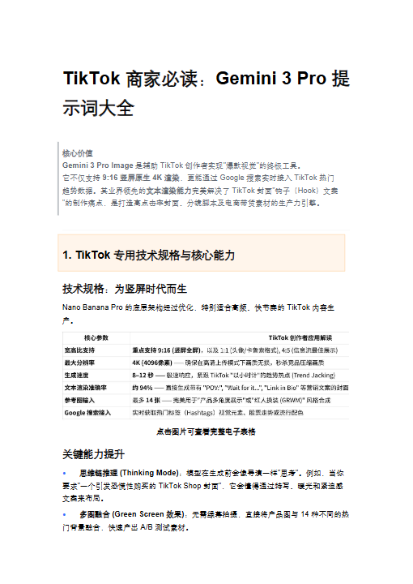
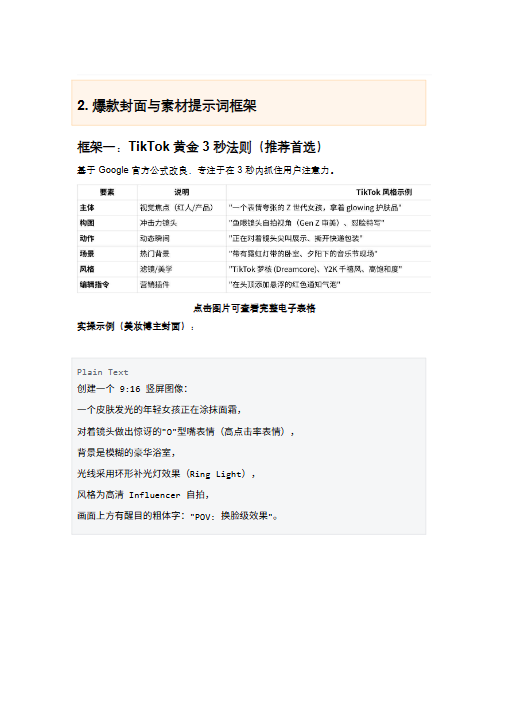
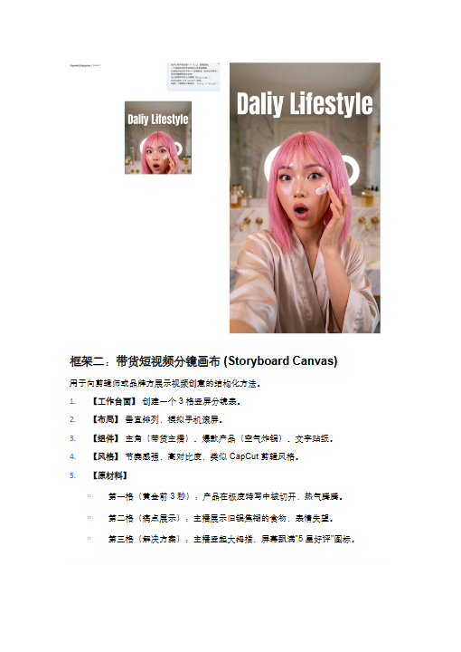
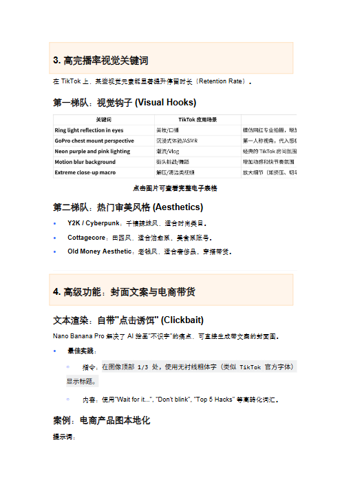
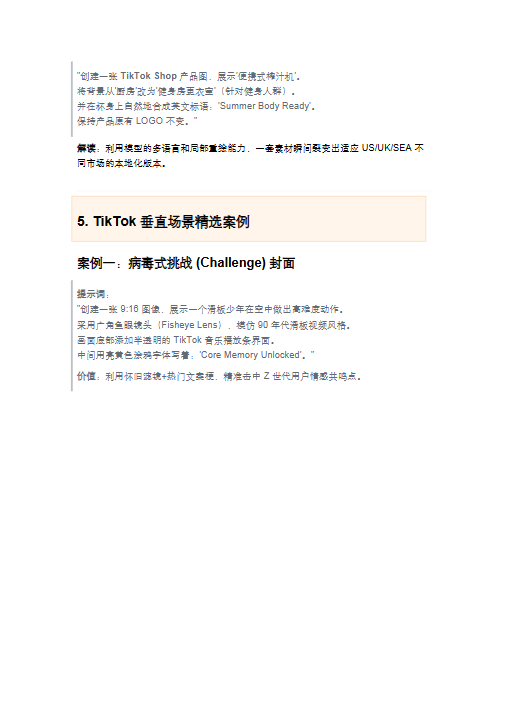
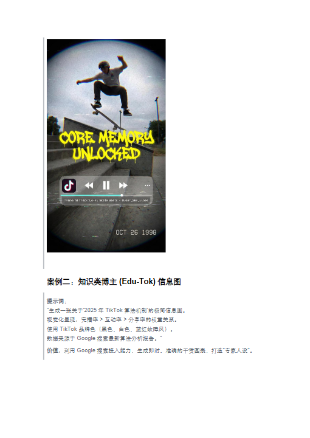
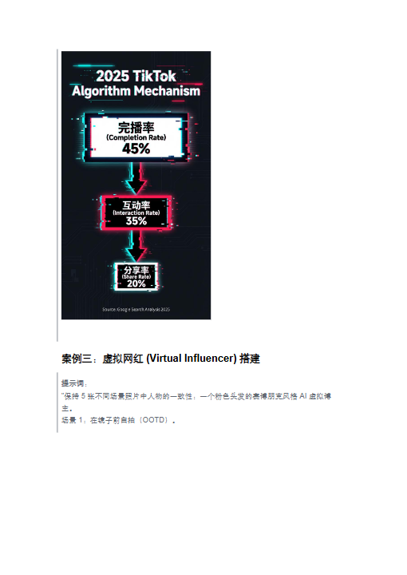
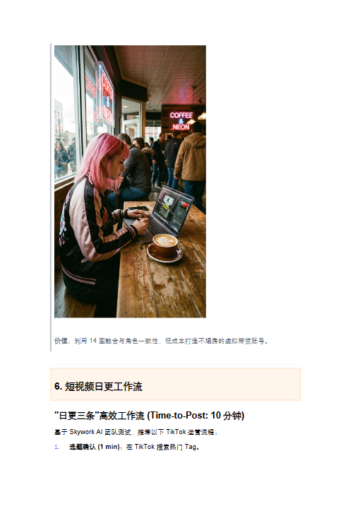
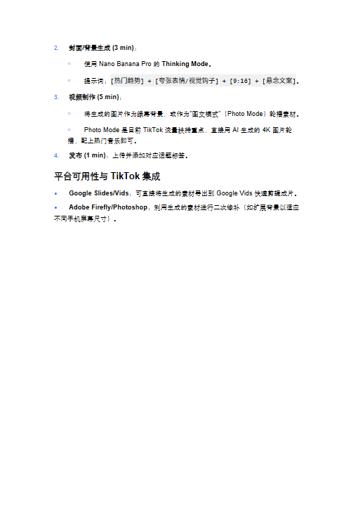

第 1 页

查看文字
TikTok商家必读：Gemini3Pro提
示词大全
核心价值
Gemini3ProImage是辅助TikTok创作者实现"爆款视觉"的终极工具。
它不仅支持9:16竖屏原生4K渲染，更能通过Google搜索实时接入TikTok热门
趋势数据。其业界领先的文本渲染能力完美解决了TikTok封面"钩子（Hook）文案
"的制作痛点，是打造高点击率封面、分镜脚本及电商带货素材的生产力引擎。
1.TikTok专用技术规格与核心能力
技术规格：为竖屏时代而生
NanoBananaPro的底层架构经过优化，特别适合高频、快节奏的TikTok内容生
产。
点击图片可查看完整电子表格
关键能力提升
•思维链推理(ThinkingMode)：模型在生成前会像导演一样"思考"。例如，当你
要求"一个引发恐慌性购买的TikTokShop封面"，它会懂得通过特写、暖光和紧迫感
文案来布局。
•多图融合(GreenScreen效果)：无需绿幕拍摄，直接将产品图与14种不同的热
门背景融合，快速产出A/B测试素材。
第 2 页

查看文字
2.爆款封面与素材提示词框架
框架一：TikTok黄金3秒法则（推荐首选）
基于Google官方公式改良，专注于在3秒内抓住用户注意力。
点击图片可查看完整电子表格
实操示例（美妆博主封面）：
PlainText
创建一个9:16竖屏图像：
一个皮肤发光的年轻女孩正在涂抹面霜，
对着镜头做出惊讶的"O"型嘴表情（高点击率表情），
背景是模糊的豪华浴室，
光线采用环形补光灯效果（RingLight），
风格为高清Influencer自拍，
画面上方有醒目的粗体字："POV:换脸级效果"。
第 3 页

查看文字
框架二：带货短视频分镜画布(StoryboardCanvas)
用于向剪辑师或品牌方展示视频创意的结构化方法。
1.【工作台面】创建一个3格竖屏分镜表。
2.【布局】垂直排列，模拟手机滚屏。
3.【组件】主角（带货主播）、爆款产品（空气炸锅）、文字贴纸。
4.【风格】节奏感强，高对比度，类似CapCut剪辑风格。
5.【原材料】
￮第一格（黄金前3秒）：产品在极度特写中被切开，热气腾腾。
￮第二格（痛点展示）：主播展示旧锅焦糊的食物，表情失望。
￮第三格（解决方案）：主播竖起大拇指，屏幕飘满"5星好评"图标。
第 4 页

查看文字
3.高完播率视觉关键词
在TikTok上，某些视觉元素能显著提升停留时长（RetentionRate）。
第一梯队：视觉钩子(VisualHooks)
点击图片可查看完整电子表格
第二梯队：热门审美风格(Aesthetics)
•Y2K/Cyberpunk：千禧辣妹风，适合时尚类目。
•Cottagecore：田园风，适合治愈系、美食系账号。
•OldMoneyAesthetic：老钱风，适合奢侈品、穿搭带货。
4.高级功能：封面文案与电商带货
文本渲染：自带"点击诱饵"(Clickbait)
NanoBananaPro解决了AI绘画"不识字"的痛点，可直接生成带文案的封面图。
•最佳实践：
￮指令：在图像顶部1/3处，使用无衬线粗体字（类似TikTok官方字体）
显示标题。
￮内容：使用"Waitforit...","Don'tblink","Top5Hacks"等高转化词汇。
案例：电商产品图本地化
提示词：
第 5 页

查看文字
"创建一张TikTokShop产品图，展示'便携式榨汁机'。
将背景从'厨房'改为'健身房更衣室'（针对健身人群）。
并在杯身上自然地合成英文标语：'SummerBodyReady'。
保持产品原有LOGO不变。"
解读：利用模型的多语言和局部重绘能力，一套素材瞬间裂变出适应US/UK/SEA不
同市场的本地化版本。
5.TikTok垂直场景精选案例
案例一：病毒式挑战(Challenge)封面
提示词：
"创建一张9:16图像，展示一个滑板少年在空中做出高难度动作。
采用广角鱼眼镜头（FisheyeLens），模仿90年代滑板视频风格。
画面底部添加半透明的TikTok音乐播放条界面。
中间用亮黄色涂鸦字体写着：'CoreMemoryUnlocked'。"
价值：利用怀旧滤镜+热门文案梗，精准击中Z世代用户情感共鸣点。
第 6 页

查看文字
案例二：知识类博主(Edu-Tok)信息图
提示词：
"生成一张关于'2025年TikTok算法机制'的极简信息图。
视觉化呈现：完播率>互动率>分享率的权重关系。
使用TikTok品牌色（黑色、白色、蓝红故障风）。
数据来源于Google搜索最新算法分析报告。"
价值：利用Google搜索接入能力，生成即时、准确的干货图表，打造"专家人设"。
第 7 页

查看文字
案例三：虚拟网红(VirtualInfluencer)搭建
提示词：
"保持5张不同场景照片中人物的一致性：一个粉色头发的赛博朋克风格AI虚拟博
主。
场景1：在镜子前自拍（OOTD）。
第 9 页

查看文字
价值：利用14图融合与角色一致性，低成本打造不塌房的虚拟带货账号。
6.短视频日更工作流
"日更三条"高效工作流(Time-to-Post:10分钟)
基于SkyworkAI团队测试，推荐以下TikTok运营流程：
1.选题确认(1min)：在TikTok搜索热门Tag。
第 10 页

查看文字
2.封面/背景生成(3min)：
￮使用NanoBananaPro的ThinkingMode。
￮提示词：[热门趋势]+[夸张表情/视觉钩子]+[9:16]+[悬念文案]。
3.视频制作(5min)：
￮将生成的图片作为绿幕背景，或作为"图文模式"（PhotoMode）轮播素材。
￮PhotoMode是目前TikTok流量扶持重点，直接用AI生成的4K图片轮
播，配上热门音乐即可。
4.发布(1min)：上传并添加对应话题标签。
平台可用性与TikTok集成
•GoogleSlides/Vids：可直接将生成的素材导出到GoogleVids快速剪辑成片。
•AdobeFirefly/Photoshop：利用生成的素材进行二次修补（如扩展背景以适应
不同手机屏幕尺寸）。